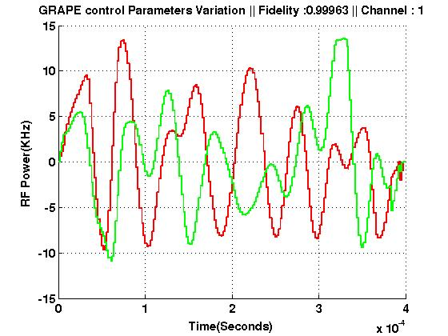

FileName : plotGRAPE
Contents
Description
Plots the variation of the controls. Seperate plot is generated for separate channels, the top of the plot mentions the fidelity of the pulse along with the channel number.
Command
plotGRAPE(GRinfo)
GRinfo : Variable in which all the information of grape pulse is stored.
EXAMPLE OUTPUT
Shown below is an example plot. Red is ux and green is uy.

function plotGRAPE(Input_struct) global gra gra=Input_struct; u=gra.u; a1=0:gra.del_t:gra.T; a2=gra.del_t:gra.del_t:gra.T-gra.del_t; xplot_axis=sort([a1 a2]); u=reshape(repmat(u,1,2)',gra.m,2*length(u))'; for j=1:gra.m/2 figure hold on P1=plot(xplot_axis,u(:,j)/2/pi/1e3,'r','LineWidth',2); P2=plot(xplot_axis,u(:,j+length(gra.spinlist))/2/pi/1e3,'g','LineWidth',2); X1=xlabel('Time(Seconds)'); Y1=ylabel('RF Power(KHz)'); T1=title(['GRAPE Controls Variation || Fidelity :',num2str(gra.IDEALfidelity),' || Channel : ',num2str(j)]); set([gca X1 Y1 T1],'FontSize',12,'FontWeight','bold') grid on end